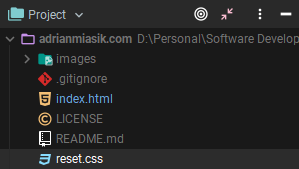
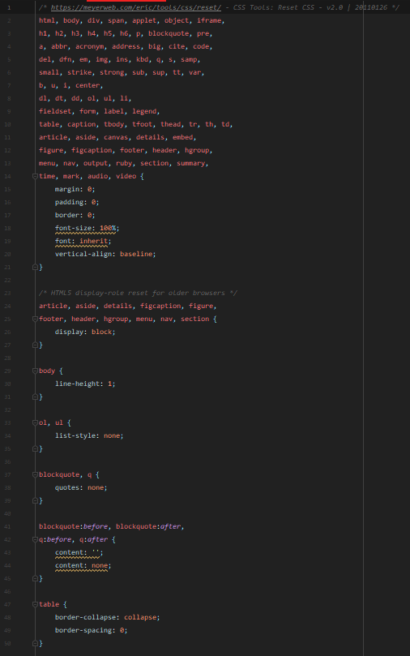
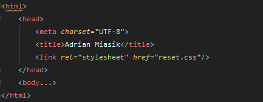

Author: Adrian Miasik
Publication Date: 2019-12-02 (1:25a.m. EST)
So this site just got a bit uglier. (I mean it's already pretty ugly to begin with. lol)
Notice the titles for each of the blog posts? They're all the same size now.
Notice the spacing for a lot of our content? It's all gone.
Notice our block quotes? The indentation and quotation marks have also been removed.
So what gives Adrian? What did you do?
Well...Remember in one of my previous posts I showed you how each browser reacted differently to the same
file? In that post I was only looking at what the browsers were displaying in the console. And as you probably
guessed by now... I never took a close look at the visuals of the website. Turns out each browser might
stylize certain HTML elements differently using their own defaults. This becomes an issue when we want our
site to look the same on any browser. Fortunately, we can override the browsers defaults with our own style
sheet! A lot of people use something called "CSS reset", but...
What is CSS reset?
A CSS reset is a custom CSS file that attempts to remove a lot of the browsers default styling's in order to
achieve visual consistency between browsers.
Well what if I don't want to remove the quotation marks from my quotes? You could just modify the style sheet
and re-add the quotation marks back in. But then I can't tell you about CSS normalize. So...
What is CSS normalize?
CSS normalize is a custom CSS file that attempts to keep a lot the default margins and padding from browsers,
but it will try to make the default styling's consistent between browsers.
So wait I'm confused. What's the difference between CSS reset and CSS normalize?
The difference between CSS reset and CSS normalize, is that CSS reset aims to remove the default styling's
where CSS normalize aims to keep the default styling's. Both of these solutions intend to minimize visual
inconsistencies between browsers.
In fact, here's quite an informative video on the topic:
If you were curious, I'm currently using CSS reset for this site.
Alright, so we now know the difference between CSS reset and CSS normalize. Let me show you how I added it to
my site.
First I created a new file inside my root directory called 'reset.css'.

Then I added a variation of
Eric Meyer's
CSS reset file.
This is what that looks like:

You can find the original here.
I then went into my index.html file, and added the following "code" into the bottom of my HTML head:
<link rel="stylesheet" href="reset.css"/>
So now my HTML head looks like this:

And that's it! That all it takes to add custom CSS to index.html
Watch my
GitHub releases page
to get notified of any new content I add to this site. I'll try to look into a better way of notifying you
guys on any new content I add. Maybe an email listing or something? But in the meantime use my GitHub releases
page.
Thanks for reading! :)